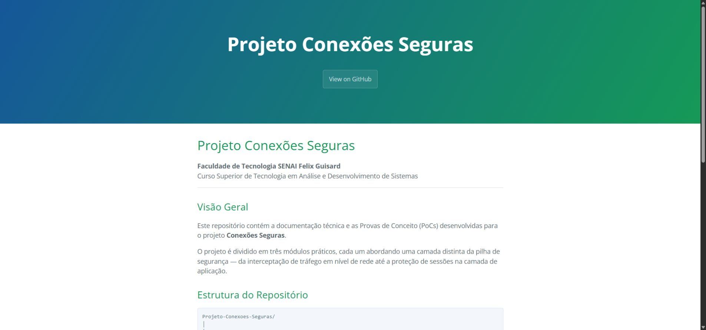

Construção
Do wireframe à interface funcional, pensando em cada etapa da experiência.
PORTFÓLIO / 2026
Sou Davi Souza, desenvolvedor full stack e estudante de ADS. Transformo problemas em experiências web claras, responsivas e funcionais.
const davi = {
foco: "produtos web",
stack: ["TS", "React", "Node"],
modo: "sempre aprendendo"
};01 / SOBRE
Sou estudante de Análise e Desenvolvimento de Sistemas, apaixonado por tecnologia e resolução de problemas. Minha prática passa por interfaces, lógica, automações e construção de experiências completas — sempre buscando clareza, utilidade e evolução constante.
Fora do código, RPG de mesa e jogos competitivos fortalecem habilidades que levo para cada projeto: estratégia, colaboração, comunicação direta e tomada de decisão sob pressão.
Do wireframe à interface funcional, pensando em cada etapa da experiência.
Comunicação clara, troca constante e trabalho em equipe para chegar mais longe.
Aprender, testar, revisar e transformar conhecimento em entregas melhores.
02 / PROJETOS
Uma seleção de projetos acadêmicos e pessoais em que explorei produto, interface e desenvolvimento.

Hub pessoal para organizar finanças, metas, assinaturas e rotina de estudos.

Sistema de gerenciamento de requisitos, aprovações e propostas de software.

Jogo de ritmo para navegador com diferentes trilhas e níveis de dificuldade.

Documentação prática sobre redes, TLS e sessões seguras em ambiente AWS.

Experiência de loja digital com catálogo, detalhes de produto e carrinho.
Quer ver os repositórios e acompanhar o código?
Ver todos no GitHub ↗03 / TRAJETÓRIA
Faculdade de Tecnologia SENAI Félix Guisard · Taubaté
Em andamentoColégio COTET · Taubaté
Concluído04 / STACK
05 / CONTATO
Tem uma ideia, projeto ou oportunidade?